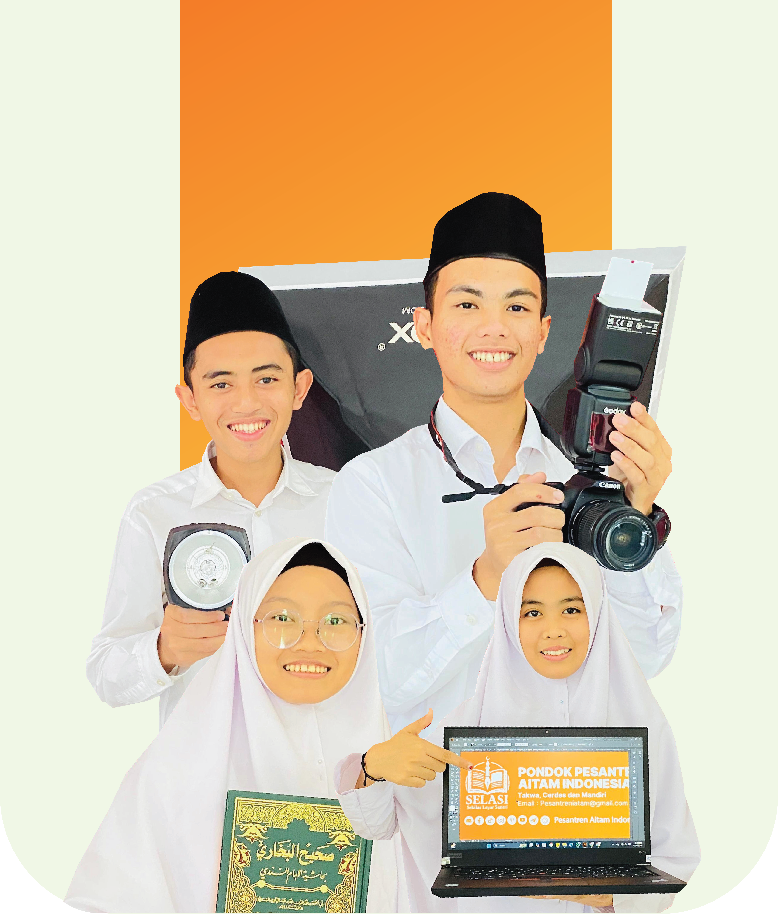

📚
Pendidikan Islam
Pembelajaran Al-Qur'an, tafsir, fiqih, dan akhlak dengan metode yang menyenangkan dan terstruktur.
Melalui perpaduan Kurikulum Integratif Pesantren dan PKBM, kami berkomitmen membimbing setiap santri untuk memahami ilmu agama (diniyah), unggul dalam capaian akademik, serta mengasah bakat unik mereka demi kemandirian masa depan. Bersama Aitam Indonesia, mari wujudkan masa depan anak yang mulia di hadapan Allah dan bermanfaat bagi umat.

Pembelajaran Al-Qur'an, tafsir, fiqih, dan akhlak dengan metode yang menyenangkan dan terstruktur.
Menumbuhkan kemampuan akademik, leadership, dan kreativitas melalui program yang fokus pada bakat santri.
Lingkungan hidup yang bersih, aman, dan kondusif untuk menumbuhkan kedisiplinan dan kebersamaan.

Pesantren Al-Fath menjadikan akhlak sebagai fondasi utama dalam setiap proses pembelajaran. Kami membimbing santri agar mampu menyeimbangkan antara ilmu dunia dan ilmu akhirat.
Menghafal Al-Qur'an dengan jadwal rutin dan bimbingan pembimbing hafalan yang berpengalaman.
Meningkatkan kemampuan berkomunikasi dan memahami literatur Islami secara lebih luas.
Menanamkan karakter disiplin, tanggung jawab, dan kepemimpinan dalam kehidupan sehari-hari.
“Lingkungan pesantren sangat kondusif. Saya menjadi lebih disiplin, lebih semangat belajar, dan lebih dekat dengan Allah.”
“Program tahfidz dan pembinaan akhlak sangat membantu saya tumbuh menjadi pribadi yang lebih baik.”